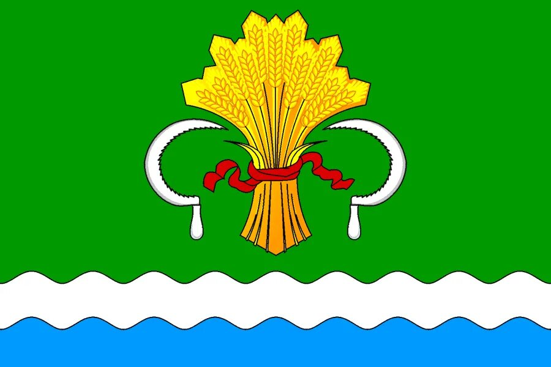
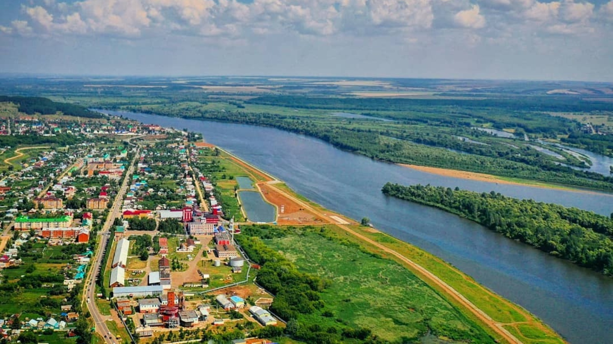

Мамадыш известен с XII века. В 1781 году получил статус уездного города. Район славится своими богатыми культурными традициями, многонациональным составом и живописной природой, играя важную роль в истории республики.
